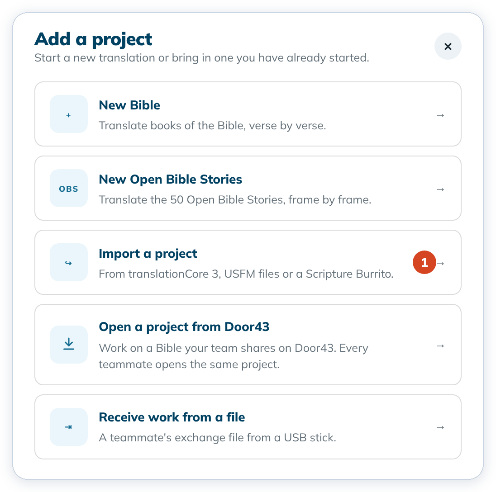
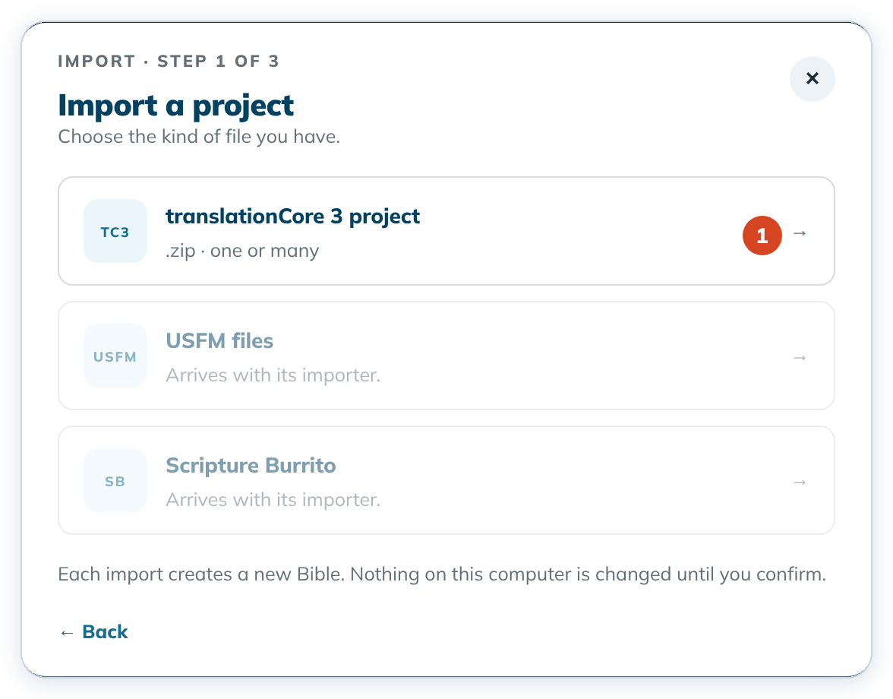

Import a translationCore 3 project
Bring translationCore 3 work into tC4 as a new project, from the project zips translationCore 3 exported.
To start a project from USFM files or a Scripture Burrito, use New Bible instead. See Create a Bible project.
Each import creates a new project. Nothing on this computer changes until you click Import as a new Bible.
Steps
- On Home, click + Add a project, then Import a project (1).


- Choose translationCore 3 project (1). USFM files and Scripture Burrito are greyed out here with Arrives with its importer. Start those from New Bible.


- Drop your files on the drop area, or click it to choose them. Remove a wrong file with its ✕.
- Click Review files →.
- Read the review. A green dot means all is well. An orange dot means you need to act.
- Choose Look up on Door43 (needs the internet) or Use installed versions (1).

- Check the Bible name and Language code and change them if needed.
- Click Import as a new Bible. Home shows "{name} was imported", and the new card has an Imported badge.
To cancel, click Cancel or the ✕. Nothing is created.
If the import button stays grey
- The name is already used. Type another Bible name.

- A file is damaged. A red "This file cannot be imported" box gives the reason. Nothing can be imported from that file. See Messages that protect your project.
Good to know
- Translation Words Links is pinned to a
_twlrelease (matched by date when looking up on Door43). Languages without a Links repository use the English Links that come with the app.
- All translationCore 3 zips in one import must be the same language.
- The "was imported" message stays on Home until you close it with its ✕ or restart tC4.
- To add a book to a project you already have, use Add a book › Add books from USFM files.